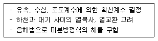
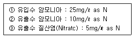
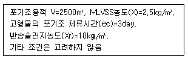
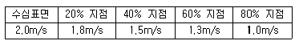
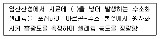

수질환경기사 (2006-05-14 기출문제)
1과목: 수질오염개론
1. (세포비증가율)가 max(세포최대증가율)의 60% 일 때 기질농도(S60)와 max의 20%일 때의 기질농도(S60)와의 비(S60/S60)는? (단, 배양기내의 세포증가율은 Monod식이 적용된다.)
- 4
- 6
- 8
- 16
(정답률: 알수없음)

2. CH3COOH 150mg/L를 함유하고 있는 용액의 pH는? (단, CH3COOH의 Ka=1.8×10-5)
- 3.7
- 4.2
- 4.6
- 5.2
(정답률: 알수없음)
3. 용량이 6000m3인 수조에 200m3/hr의 유량이 유입된다면 수조 내 BOD 200mg/ℓ가 20mg/ℓ 될 때까지의 소요시간(hr)은? [단, 유입수 내 BOD=0이며 완전 혼합형(희석효과만 고려함)]
- 약 54
- 약 69
- 약 72
- 약 81
(정답률: 50%)
4. 녹조류(Green Algae)에 관한 설명으로 틀린 것은?
- 조류 중 가장 큰 문(division)이다.
- 저장물질은 라마나린(다당류)이다.
- 세포벽은 섬유소이다.
- 클로로필a, b를 가지고 있다.
(정답률: 알수없음)
5. 어떤 하천수의 수온은 10℃이다. 20℃의 탈산소계수 K(상용대수)가 0.1/day일 때 최종 BOD에 대한 BOD6의 비는? (단, KT=K20×1.047(T-20), BOD6/최종 BOD
- 0.43
- 0.48
- 0.53
- 0.58
(정답률: 알수없음)
6. Na+=180mg/ℓ, Ca2+=80mg/ℓ, Mg2+=96mg/ℓ인 농업용수의 SAR치는? (단, 원자량 Na : 23, Ca : 40, Mg : 24)
- 약 1.4
- 약 2.6
- 약 3.2
- 약 4.6
(정답률: 62%)
7. 다음은 해수의 특성을 기술한 것이다. 틀린 것은?
- 해수는 pH 약 8.2 정도이며 강전해질로 1리터당 35g의 염분을 함유한다.
- 해수의 밀도는 염분, 수온, 수압의 함수로 수심이 깊을수록 증가한다.
- 해수 내 전체질소 중 약 35% 정도는 암모니아성 질소와 유기질소의 형태이다.
- 해수의 Mg/Ca비는 30~40 정도로 담수에 비하여 크다.
(정답률: 64%)
8. 분뇨의 측징과 가장 거리가 먼 것은?
- 분과 뇨의 구성비는 약 1:8~1:10 정도이며 고액분리가 용이하다.
- 분뇨 내 질소화합물은 알칼리도를 높게 유지시켜 pH의 강화를 막아준다.
- 분의 경우 질소산화물은 전체 VS의 12~20% 정도 함유되어 있다.
- 분뇨 내 BOD, SS는 COD의 1/3~1/2 정도이다.
(정답률: 알수없음)
9. Glucose(C6H12O6) 500mg/L 용액을 호기성 처리시 필요한 이론적인 인(P)량(mg/L)은? (단, BOD5 : N : P = 100 : 5 : 1, K1 = 0.1 day-1, 상용대수기준)(오류 신고가 접수된 문제입니다. 반드시 정답과 해설을 확인하시기 바랍니다.)
- 약 2.8
- 약 3.6
- 약 4.2
- 약 5.1
(정답률: 알수없음)
10. 석회수용액(Ca(OH)2) 100mL를 중화시키는데 0.03N HCl 32mL이 소요되었다면 이석회수용액의 경도는? (단, 단위 : CaCO3 mg/L)
- 420
- 440
- 460
- 480
(정답률: 39%)
11. Ca(OH)2 2,000mL 용액의 pH는?
- 11.3
- 11.7
- 12.3
- 12.7
(정답률: 42%)
12. 물의 특성을 설명한 것 중에서 적절치 못한 것은?
- 상온에서 알칼리금속, 알칼리토금속, 철과 반응하여 수소를 발생시킨다.
- 표면장력은 수온이 증가하면 감소한다.
- 비슷한 수온이 증가하면 감소한다.
- 점도는 수온과 불순물이 농도에 따라 달라지는데 수온이 증가할수록 점도는 낮아진다.
(정답률: 알수없음)
13. 수은(Hg)에 관한 설명으로 틀린 것은?
- 수은은 상온에서 액체상태로 존재한다.
- 대표적 만성질환으로는 미나마타병, 헌터-루셀 증후군이 있다.
- 철, 니켈, 알루미늄, 배금과 주로 화합하여 아말감을 만든다.
- 알칼수은 화합물의 독성은 무기수은 화합물의 독성보다 매우 강하다.
(정답률: 알수없음)
14. 다음은 반응조 혼합에 관한 내용을 기술한 것이다. 틀린 것은?
- Morrill 지수가 1인 경우, 이상적인 플러그 흐름상태이다.
- 분산 수가 무한대가 되면 이상적인 플러그 흐름상태이다.
- 분산 1이면 이상적인 완전혼합 흐름 상태이다.
- Morrill 지수의 값이 클수록 완전혼합 흐름 상태에 근접한다.
(정답률: 알수없음)
15. C2H6 5g이 완전산화하는데 필요한 이론적 산소량은?
- 약 12.7g
- 약 14.7g
- 약 16.7g
- 약 18.7g
(정답률: 알수없음)
16. 분뇨 정화조의 희석배율은 통상유입 CL-농도와 방류수의 희석된 CL-농도로써 산출될 수 있다. 정화조로 유입된 생 분뇨의 BOD가 21500ppm, 염소 이온농도가 5500ppm, 방류수의 염소이온 농도가 200ppm 이라면, 방류수의 BOD 농도가 30ppm일 때 정화조의 BOD 제거율(%)은?
- 99.6
- 96.2
- 93.4
- 89.8
(정답률: 67%)
17. Kolkwrtz와 Marson의 하천의 하수유입에 의한 변화상태를 4가지로 구분하는데, 수질도를 초록색으로 표시하는 지대는?
- 강부수성 수역
- α-중부수성 수역
- β-중부수성 수역
- 빈부수성 수역
(정답률: 알수없음)
18. 소수성 클로이드에 관한 설명으로 틀린 것은?
- 염에 아주 민감하다.
- 표면장력이 용매와 비슷하다.
- 재생이 용이하다.
- 탄달 효과가 크다.
(정답률: 알수없음)
19. 적조(red tide)에 관한 설명으로 알맞지 않은 것은?
- 여름철, 갈수기로 인한 염도가 증가된 정체된 해역에서 주로 발생된다.
- 고밀도로 존재하는 적조생물의 호흡에 의해 수중용존산소를 소비하여 수중의 다른 생물의 생존이 어렵다.
- upwelling 현상이 원인이 되는 경우가 있다.
- 적조생물 중 독성을 갖는 편모조류가 치사성이 독소를 분비, 어패류를 폐사시킨다.
(정답률: 82%)
20. 하천 모델 중 다음의 특징을 가지는 것은?

- QUAL-I
- WQRRS
- DO SAG-I
- HSPE
(정답률: 70%)
2과목: 상하수도계획
21. 강우강도 I=3970 / t+31 mm/hr, 유역면적 1.5㎢, 유입시간 180sec, 관거길이 1㎞, 유출계수 1.1, 하수관의 유속 33min일 경우 우수유출량은? (단, 합리식 적용)
- 약 18m3/sec
- 약 28m3/sec
- 약 88m3/sec
- 약 48m3/sec
(정답률: 40%)
22. 다음 중 하수처리시설인 일차침전지의 유효 수심으로 가장 적절한 것은?
- 2m
- 4m
- 6m
- 8m
(정답률: 30%)
23. 상수도 취수시 계획취수량 기준으로 가장 적절한 것은?
- 계획 1일 평균급수량의 10% 정도 증가된 수량으로 정함
- 계획 1일 최대급수량의 10% 정도 증가된 수량으로 정함
- 계획 1시간 평균급수량의 10% 정도 증가된 수량으로 정함
- 계획 1시간 최대급수량의 10% 정도 증가된 수량으로 정함
(정답률: 알수없음)
24. 하수도시설인 호기성 소화조이 수와 형상에 관한 설명으로 틀린 것은?
- 소화조의 수는 최소한 2조 이상으로 한다.
- 형상이 원형인 경우 바닥의 기울기는 10~20% 정도 되게 한다.
- 측심이 2~3m 정도로 한다.
- 지붕이 불필요하며 가온시킬 필요성이 없다.
(정답률: 20%)
25. 상수도시설 일반구조의 설계하중 및 외력에 대한 고려 사항으로 틀린 것은?
- 풍압은 풍량에 풍력계수를 곱하여 산정한다.
- 얼음 두께에 비하여 결빙 면이 작은 구조물의 설계에는 빙압을 고려한다.
- 지하수위가 높은 곳에 설치하는 지상(地)구조물은 비웠을 경우의 부력을 고려한다.
- 양압력은 구조물의 전후에 수위 차가 생기는 경우에 고려한다.
(정답률: 50%)
26. 펌프의 캐비테이션(공동현상) 발생을 위한 대책으로 틀린 것은?
- 펌프의 설치위치를 가능한 한 낮추어 가용유효흡입 수두를 크게 한다.
- 흡입관의 손실을 가능한 한 작게 하여 가용유효흡입 수두를 크게 한다.
- 펌프의 회전속도를 낮게 선정하여 필요유효흡입수두를 크게 한다.
- 흡입 측 밸브를 완전히 개장하고 펌프를 운전한다.
(정답률: 58%)
27. 하천수를 수원으로 하는 경우에 사용하는 취수시설인 ‘취수보’에 관한 설명으로 틀린 것은?
- 일반적으로 대하천에 적당하다.
- 안정된 취수가 가능하다.
- 침사 효과가 작다.
- 하천의 흐름이 불안정한 경우에 적합하다.
(정답률: 34%)
28. [합류식에서 우천시 계획 오수량은 ( )이상으로 한다] ( )안에 알맞은 내용은?
- 원칙적으로 계획 1일 최대 오수량의 2배
- 원칙적으로 계획 1일 최대 오수량의 3배
- 원칙적으로 계획시간 최대 오수량의 2배
- 원칙적으로 계획시간 최대 오수량의 3배
(정답률: 알수없음)
29. 하수관을 배설하려고 한다. 매설지점의 표토는 젖은 진흙으로서 흙의 단위중량은 1.85kN/m3 이고 흙의 종류와 관의 깊이에 따라 결정되는 계수 C1은 1.86이다. 이때 매설관이 받는 하중은? (단, Marston의 방법 적용, 관의 상부 90° 부분에서의 관매설을 위하여 굴토한 도량폭은 1.2m 이다.)
- 4.15kN/m3
- 4.35kN/m3
- 4.65kN/m3
- 4.95kN/m3
(정답률: 알수없음)
30. 정수처리를 위한 침전지 중 고속응집침전지를 선택할 때 고려하여야 하는 조건으로 틀린 것은?
- 원수 탁도는 10 NTU 이상이어야 한다.
- 최고 탁도는 100 NTU 이상이어야 한다.
- 처리수량의 변동이 적어야 한다.
- 탁도와 수온의 변동이 적어야 한다.
(정답률: 알수없음)
31. 상수도 시설 중 완속 여과지의 여과속도 표준범위로 적절한 것은?
- 4 - 5 m/day
- 5 - 15 m/day
- 15 - 25 m/day
- 25 - 50 m/day
(정답률: 알수없음)
32. 펌프 운전시 비정상 현상으로 토출량과 토출압이 주기적으로 변동하는 상태를 일으키며 펌프 특성 곡선이 산고형에서 발생하고 큰 진동이 발생되는 것은?
- 캐비테이션 현상
- 맥놀이 현상
- 서어징 현상
- 수격 현상
(정답률: 42%)
33. 정수시설이 응집지의 플록형성지에 관한 설명으로 틀린 것은?
- 혼화지와 침전지 사이에 위치하고 침전지에 붙여서 설치한다.
- 플록형성 시간은 걔획 정수량에 대하여 20~40분 간을 표준으로 한다.
- 기계식 교반에서 플록큐레이션의 주변속도는 5~15 cm/sec을 표준으로 한다.
- 플록형성지 내의 굡나 강도는 하류로 갈수록 점차 감소시키는 것이 바람직하다.
(정답률: 55%)
34. 정수처리시 랑겔리아지수의 개선을 위한 방법으로 가장 알맞은 것은? (단, 용해성 성분)
- 알칼리제 처리
- 철세균 이용법
- 전기분해
- 부상분리
(정답률: 알수없음)
35. 하수처리시설인 우수 침사지의 표면 부하율로 적절한 것은?
- 1800 m3/m2ㆍday 정도
- 2400 m3/m2ㆍday 정도
- 3600 m3/m2ㆍday 정도
- 4200 m3/m2ㆍday 정도
(정답률: 알수없음)
36. 우수관서 및 합류관거의 유속기준으로 적절한 것은?
- 계획우수량에 대하여 유속을 최소 0.6m/s, 최대 2m/s로 한다.
- 계획우수량에 대하여 유속을 최소 0.6m/s, 최대 3m/s로 한다.
- 계획우수량에 대하여 유속을 최소 0.8m/s, 최대 2m/s로 한다.
- 계획우수량에 대하여 유속을 최소 0.8m/s, 최대 3m/s로 한다.
(정답률: 알수없음)
37. 수도관으로 사용되는 관종 중 덕 타일 주철관에 관한 설명으로 틀린 것은?
- 강도가 크고 내구성이 있다.
- 이음에 신축 휨 성이 적어 관이 지반 변동에 유연하지 못하다.
- 이음의 종류가 풍부하다.
- 중량이 비교적 무겁고 이음의 종류에 따라서는 이형관 보호공을 필요로 한다.
(정답률: 30%)
38. 하수도계획의 목표 연도는?
- 원칙적으로 10년 정도로 한다.
- 원칙적으로 20년 정도로 한다.
- 원칙적으로 30년 정도로 한다.
- 원칙적으로 40년 정도로 한다.
(정답률: 75%)
39. 상수도 시설 중 침사지에 관한 설명으로 틀린 것은?
- 지의 길이는 촉의 3~8배를 표준으로 한다.
- 지의 상단높이는 0.3~6m의 여유고를 둔다.
- 지의 유효수심은 3~4m를 표준으로 한다.
- 표면부하율은 200~500mm/min을 표준으로 한다.
(정답률: 알수없음)
40. 원심력 펌프의 규정회전수는 3회/sec, 규정토출량이 32m3/min, 규정양정(H)이 8m이다. 이때 이펌프의 비교 회전도는?
- 약 146
- 약 214
- 약 326
- 약 421
(정답률: 50%)
3과목: 수질오염방지기술
41. 미생물을 이용하여 폐수에 포함된 어염물질인 유기물, 질소, 인을 동시에 처리하는 공법은 대체로 혐기조(anaerobic tank), 무 산소조(anoxic tank), 포기조(oxic tank)로 구성되어 있다. 이 중 혐기조에서의 주된 상물학적 오염물질 제거반응은?
- 인 방출
- 인 과잉흡수
- 질산화
- 탈질화
(정답률: 알수없음)
42. 부피가 3000m3인 탱크에서 G 갑을 50/s로 유지하기 위해 필요한 이론적 소요동력과 패들 면적은? (단, 유체 점성 계수 1.139×10-3NㆍS/m2, 밀도 1000kg/m3, 직사각형 패들의 항력계수 1, 8, 패들 주변속도 0,6m/s, 패들 상대속도는 패들주변속도×0,75로 가정하여 패들 면적은 A=[2P/(CㆍqㆍV3)] 식을 적용한다.)
- 8543W, 104m2
- 8543W, 154m2
- 7543W, 104m2
- 7543W, 154m2
(정답률: 알수없음)
43. 우량1000m3, 부유물질농도 220mg/ℓ 인 하수의 처리를 위한 최초 침전지에서 생산되는 슬러지의 양은? (단, 슬러지 단위 중량 (비중) 1,03, 함수율 94%, 최초침전지 체류시간 2시간, 부유물질 제거효율 60% 기타 조건은 고려하지 않음)
- 1.14m3
- 2.14m3
- 3.14m3
- 4.14m3
(정답률: 25%)
44. 표준 활성 슬러지법에서 폭기조의 MLSS 농도를 3000mg/ℓ로 유지하기 위해서 슬러지 반송율은 몇 %로 하여야 하는가? (단, 반송 슬러지의 SS농도는 8000mg/ℓ이다.)
- 40%
- 50%
- 60%
- 70%
(정답률: 알수없음)
45. 하수처리에 관련된 침전현상의 종류 중 ‘간섭침전’ 에 관한 설명과 가장 거리가 먼 것은?
- 생물학적 처리시설과 함께 사용되는 2차 침전시설내에서 발생한다.
- 입자 간의 작용하는 힘에 의해 주변 입자들의 침전을 방해하는 중간 정도 농도의 부유액 에서의 침전을 말한다.
- 입자 등은 서로 간의 상대적 위치를 변경시키려 하며 입자들은 구조물을 형성하여 한 개의 단위로 침전한다.
- 함께 침전하는 입자들의 상부에 고체와 액체의 경계면이 형성된다.
(정답률: 알수없음)
46. 생물학적 인 제거를 위한 A/O 공정에 관한 설명으로 틀린 것은?
- 폐슬러지 내의 인의 함량이 비교적 높고 비료의 가치가 있다.
- 비교적 수리학적 체류시간이 짧다.
- 높은 BOD/P 비가 요구된다.
- 공정의 운전 유연성이 우수하다.
(정답률: 29%)
47. 유해물질인 시안(CN)처리 방법에 관한 설명으로 틀린 것은?
- 오존산화법 : 오존은 알칼리성 영역에서 시안화합물을 N2로 분해시켜 무해화 한다.
- 전해법 : 유가금속류를 회수할 수 있는 장점이 있다.
- 충격법 : 시안을 pH 3이하의 강산성 영역에서 강하게 폭기하여 산화하는 방법이다.
- 감청법 : 알칼리성 영역에서 과잉의 황산알루미늄을 가하여 공침시켜 제거하는 방법이다.
(정답률: 알수없음)
48. 슬러지의 소화율이한 생슬러지 중의 VS가 가스화 및 액화되는 비율을 말한다. 생슬러지와 소화슬러지의 VS/TS가 각각 80%, 50%일 경우 소화율은?
- 45%
- 555
- 65%
- 75%
(정답률: 알수없음)
49. 역삼투 장치로 하루에 1140m3의 3차 처리된 유출수를 탈염시키고자 한다. 요구되는 막면적(m2)은? (단, - 유입수와 유출수 사이의 압력차 =2400kPa, - 25℃에서 물질전달계수 =0.2068L/(day-m2)(kPa), - 최저 운전 온도 = 10m2, -A10℃ = 1.58 A25℃, - 유입수와 유출수의 삼투압 차 = 310kPa)
- 약 2800
- 약 3500
- 약 4200
- 약 5100
(정답률: 알수없음)
50. 미생물 고정화법인 포괄고정화법에 관한 설명과 가장 거리가 먼 것은?
- 증식한 균은 새어나가기 어려우며 내부에서 자기 분해함.
- 질화세균 등이 pellet 내에 고정화 되므로 균수의 안정유지가 용이함.
- 복수의 균이 공존하면 균 사이의 binding 이 약화되어 균이 새어나올 수 있음.
- 고정화 담체의 충전율은 은전방법에 다라 20-50%정도이고 유동화가 배려되어 있음.
(정답률: 40%)
51. 부상조의 최적 A/S비는 0.04, 처리할 폐수의 부유물질 농도는 250mg/ℓ, 20℃에서 414kPa로 가압할 때 반송율은(%)은?
- 약 10
- 약 13
- 약 17
- 약 19
(정답률: 10%)
52. 염소소독시 발생 되는 크로라민에 관한 설명으로 틀린 것은?
- HOCl은 암모니아와 반응하여 클로라민을 생성한다.
- 3종의 클로라민 분포는 pH의 함수이다.
- 모노클로라민은 불쾌한 냄새와 맛을 낸다.
- 트리클로라민은 불안정하여 N2로 분해되어 산화력을 상실한다.
(정답률: 알수없음)
53. 다음에 주어진 조건을 이용하여 질산화/탈질화 혼합반응조에서 요구되는 전체 반송비 R은? (단, 반송된 질산성 질소는 완전히 탈질되고, 질소동화작용은 무시한다.)

- 1.5
- 2.0
- 2.5
- 3.0
(정답률: 36%)
54. 다음 조건하에서 대략적인 이여 활성 슬러지 생산량(m3)은?

- 약 90m3/일
- 약 130m3/일
- 약 160m3/일
- 약 210m3/일
(정답률: 알수없음)
55. 활성슬러지를 탈수하기 위하여 95%(중량비)의 수분을 함유하는 슬러지에 응집제를 가했더니 [상등액 : 침전 슬러지]의 용적 비가 2:1가 되었다. 이때 침전 슬러지의 함수율은? (단, 응집제의 양은 매우 적고, 비중은 1.0로 가정)
- 85.0%
- 88.5%
- 90.0%
- 92.5%
(정답률: 8%)
56. 하루 20,000m3의 유량을 처리하기 위해 조의 깊이가 폭의 1.5배인 정방형 급속 혼합조를 설계하려고 한다. 체류 시간이 60초이면 급속 혼합조의 폭은 얼마로 설계해야 하는가?
- 1.4m
- 1.6m
- 2.1m
- 2.5m
(정답률: 알수없음)
57. 수중의 성분은 관의 부식에 다양한 영향을 준다. 다음의 수질성분 중 갈바닉 전지를 이룬 배관 상에 흠집(구멍)을 야기하는 것으로 가장 적절한 것은?
- 구리
- 용존산소
- 칼슘
- 황화수소
(정답률: 10%)
58. 입상여재 여과지 중 여과지 운전형식은 반영속식, 여과지 형식은 재래식, 여과상형태는 단층여재(층형성 또는 비층형성)인 경우에 관한 일반적 내용으로 틀린 것은?
- 여재 : 모래 EH는 무연탄
- 전형적 흐름의 방향 : 하향류
- 고형물질 걸림장소 : 여과상의 표면과 상부
- 역세척 운전 : 연속식
(정답률: 알수없음)
59. 염산사용으로 인해 pH2인 산성폐수가 하루에 200m3가 배출되고 있다. 이를 NaOH용액 약 몇 kg/day 가 필요하겠는가?(오류 신고가 접수된 문제입니다. 반드시 정답과 해설을 확인하시기 바랍니다.)
- 42
- 63
- 75
- 89
(정답률: 알수없음)
60. Langmuir 등은 흡착식에 관한 설명으로 틀린 것은?
- 식 유도시 흡착제의 표면에 흡착될 수 있는 지점의 갯수는 고정되어 있지 않다고 가정한다.
- 평형상태에서는 분자가 표면에 흡착하는 속도와 분자 표면으로부터 탈착하는 속도가 같다.
- 식 유도시 흡착은 가역적이라고 가정한다.
- 흡착 구동력이란 어떤 농도에서 흡착된 양과 그 농도에서 흡착할 수 있는 최대량과의 차이를 나타낸다.
(정답률: 알수없음)
4과목: 수질오염공정시험기준
61. 질산성 질소의 정량시험 방법 중 소향의 시료로 정량이 가능하며 시험 조작이 간편하고 재현성도 우수한 방법은? (단, 정량범위는 0.1 mgNO3-N/L 이상)
- 부루신법
- 자외선 흡광광도법
- 이온크로마토그래피법
- 데발다합금 환원증류법
(정답률: 알수없음)
62. 카드뮴의 흡광광도법(디티존) 측정시 사용되는 시약이 아닌 것은?
- 사염화탄소
- 시안화칼륨
- 수산화나트륨
- 과요오드산 칼륨
(정답률: 19%)
63. 알킬수른 시험법에 관한 다음 설명 중 틀린 것은? (단, 가스크로마토 그래프법 기준)
- 전자 포획형 검출기(ECD)를 사용한다.
- 알킬수은 사염화탄소로 추출한다.
- 운반가스는 질소 EH는 헬륨(99.99% 이상)을 사용한다.
- 정량범위는 염화메틸수은에 대응하는 수은으로서 0.00⑤mg/L 이상이다.
(정답률: 알수없음)
64. 다음의 가스크로마토그래피용 검출기 중 유기할로겐화합물, 니트로화합물 및 유기금속화합물을 선택적으로 검출하는데 가장 알맞은 것은?
- 불꽃이온화검출기
- 불꽃광도현검출기
- 열전도도검출기
- 전자포획형검출기
(정답률: 알수없음)
65. 이온전극법에 관한 설명으로 알맞은 것은?
- 이온농도의 측정범위는 일반적으로 10-2mol/ℓ~10-9mol/ℓ (또는 10-10mol/ℓ) 이다.
- 이온의 활량계수는 이온강도의 영향으로 변동되지 않는다.
- 측정용액의 온도가 10℃ 상승하면 전위 기울기는 1가 이온이 약 20mV, 2가 이온이 약 1mV 변화한다.
- 측정에 방해되지 않는 범위 내에서 약하게 일정한 속도로 교반해야 한다.
(정답률: 알수없음)
66. 기체-고체크로마토그래피법에서 분리관 안지름이 4mm이면 흡착제 및 담체의 입경(mesh)은 얼마가 적당한가? (단, 흡착형 충전물 (흡착성 고체분말) 기준)
- 100~80
- 80~60
- 60~28
- 40~28
(정답률: 알수없음)
67. NaOH 0.4g 이 물 1ℓ에 포함되어 있을 때의 액의 pH는?
- 10
- 11
- 12
- 13
(정답률: 알수없음)
68. 개수로 유량측정에 관한 설명으로 틀린 것은? (단, 수로의 구성, 재질, 단면의 형상, 기울기 등이 일정하기 않은 개수로의 경우)
- 수로는 될수록 직선적이며 수면이 물결치지 않는 곳을 고른다.
- 10m를 측정구간으로 하여 5m마다 유수의 홍단면적을 측정하고, 산출평균값을 수하여 유수의 평균 단면적으로 한다.
- 유속의 측정은 부표를 사용하여 10m 구간을 흐르는데 걸리는 시간을 스톱워치로 재며 이때 실측 유속을 표면 최대유속으로 한다.
- 총평균 유속(m/s)은 [0.75×표면 최대유속(m/s)]식으로 계산된다.
(정답률: 알수없음)
69. 시안(CN) 분석대상 시료 중 잔류염소가 공존 할 경우 시료의 보존방법에 추가될 사항은? (단, 보전방법 : 4℃ 보관, NaOH pH12 이상)
- 황산구리 1g/ℓ 첨가
- 아스코르빈산 1g/ℓ 첨가
- 수산화나트륨 2㎖/ℓ 첨가
- 아미노안티피린용액 2㎖/ℓ 첨가
(정답률: 알수없음)
70. 원자흡광광도법에 의한 크롬측정에 관한 설명으로 틀린 것은?
- 공기-이세틸렌 불꽃 시 아세틸렌 유량이 많은 쪽이 감도가 높지만 철, 니켈의 방해가 많다.
- 공기-이세틸렌 불꽃 시 방해 영향이 크므로 이때는 과망간산 나트륨을 1% 정도 넣어서 측정한다.
- 정량범위는 장치 및 조건에 따라 다르나 357-9nm에서 0.2~5mg/L 이다.
- 표준 편차율은 10~2%이다.
(정답률: 알수없음)
71. 채취도니 시료를 즉시 실험할 수 없을 때 시료의 보존방법 중 틀린 것은?
- COD : 4℃, H2SO4로 pH 10이상
- 노말헥산추출물질 : 4℃, NaOH로 pH 10이상
- 총인 : 4℃, H2SO4로 pH 2이상
- 유기인 : 4℃보관, HCl로 pH 5~9
(정답률: 30%)
72. 수질오염공정시험방법살 실험의 일반적 내용을 설명한 것이다. 알맞지 않은 것은?
- 표준온도는 0℃, 실온은 15~25℃를 뜻한다.
- 용액의 농도를 %로만 표시할 때는 W/V%를 뜻한다.
- 시험에 사용하는 물은 따로 규정이 없는 한 정제수 또는 탈염수를 말한다.
- 강압 또는 진공이라 함은 따로 규정이 없는 한 15mmHg 이하를 말한다.
(정답률: 37%)
73. 구리의 측정방법이 아닌 것은?
- 원자흡광광도법
- 흡광광도법
- 이온크로마토그래피법
- 유도결합플라스마 발광광도법
(정답률: 알수없음)
74. 하천의 수심이 0.6m 일 때 유속을 측정하기 위하여 수심의 각 부분에서 유속을 측정한 결과 다음과 같다. 평균 유속(소 구간 평균 유속)은? (단, 전수심의 %기준)

- 1.2 m/sec
- 1.3 m/sec
- 1.4 m/sec
- 1.5 m/sec
(정답률: 알수없음)
75. 식물성 플랑크톤(조류) 측정에 관한 설명으로 알맞지 않은 것은?
- 시료가 육안상 녹색이나 갈색으로 보일 경우 증류수로 적절한 정도로 희석한다.
- 수중 부유생물인 식물성 플랑크톤 분석은 플랑크톤의 종류를 파악하는 정성분석과 개체수를 조사하는 정량분석으로 한다.
- 시료 채취 후 즉시 시험하기 어려운 경우는 포르말린 용액을 3~5 v/v%를 가하여 보존한다.
- 시료의 개체수는 계수면적당 100~250 정도가 되도록 조정한다.
(정답률: 알수없음)
76. 다음은 셀레늄측정원리에 관한 설명이다. ( )안에 알맞은 내용은?

- 염화제일주석
- 아연분말
- 수산화나트륨
- 제이철암모늄
(정답률: 알수없음)
77. 총대장균군 측정을 위한 시료에 잔류염소가 함유되어 있는 경우 잔류염소 제거를 위해 주입되는 시약은?
- 10% 티오황산나트륨용액
- 10% 황산제이철암모늄용액
- 10% 황산구리용액
- 10% 황산은용액
(정답률: 30%)
78. 가스크로마토그래피법의 정성분석에 관한 설명으로 틀린 것은?
- 머무름의 종류로는 머무름 시간, 머무름 용량, 비머무름 용량, 머무름 비, 머무름 지수 등이 있다.
- 머무름 시간을 측정할 때는 3회 측정하여 그 평균값을 구한다.
- 일반적으로 5~30분 정도에서 측정하는 봉우리의 머무름 시간은 반복시험을 할 때 ±3% 오차범위이내여야 한다.
- 머무름 값의 표시는 유효부피의 보전 유무를 기록하여야 한다.
(정답률: 알수없음)
79. 알칼리성 100℃에서 과망간산칼륨에 의한 화학적 산소 요구량을 측정할 때 최종직정 종말점의 색은?
- 엷은 황색
- 엷은 홍색
- 무색
- 적자색
(정답률: 19%)
80. 폐수 중의 페놀류의 분석에 관한 설명 중 맞는 것은? (단, 흡광광도법 기준)
- 4 - 아미노안티피린에 의한 발색은 약산성 용액 중에서 최고 농도를 나타낸다.
- 수용액에서는 510nm, 클로로포름용액에서는 460nm 파장에서 흡광도를 측정한다.
- 생성된 청색의 안티피린 색소의 흡광도를 측정한다.
- 시험방법은 원심분리법과 자연 침강법이 있다.
(정답률: 알수없음)
5과목: 수질환경관계법규
81. 사업자가 환경기술인을 바꾸어 임명하는 경우는 그 사유가 발생한 날부터 몇 일 이내에 신고하여야 하는가?
- 3일
- 5일
- 7일
- 10일
(정답률: 알수없음)
82. 폐수처리업 중 폐수수탁처리업의 폐수운반차량에 표시하는 글씨의 색 기준은?
- 황색 바탕에 흑색 글씨
- 황색 바탕에 청색 글씨
- 청색 바탕에 백색 글씨
- 청색 바탕에 황색 글씨
(정답률: 알수없음)
83. 하천의 수질환경기준 중 사람의 건강보호를 위해 전 수역에서 검출되어서는 안되는 오염물질은?
- 시안
- 카드뮴
- 비소
- 납
(정답률: 알수없음)
84. 개성명령을 받은 자가 개선명령을 이행하지 않은 경우에 취해지는 ‘조업정지명령’을 위반한 자에 대한 벌칙기준으로 적절한 것은?
- 1년 이하의 징역 또는 1천만원 이하의 벌금
- 3년 이하의 징역 또는 2천만원 이하의 벌금
- 5년 이하의 징역 또는 3천만원 이하의 벌금
- 7년 이하의 징역 또는 5천만원 이하의 벌금
(정답률: 15%)
85. 다음의 위임업무 보고사항 중 보고횟수가 연 2회에 해당되는 것은?
- 환경기술인의 자격별 업종별 신고상황
- 배출부과금 징수실적 및 체납처분현황
- 폐수 무 방류 배출 시설의 설치허가(변경허가) 현황
- 기타 수질오염원 현황
(정답률: 28%)
86. 수질오염경보(조류예보)의 조류경보, 발령기준으로 적절한 것은?
- 2회 연속채취시 클로로필-a 노동 15mg/m3 이상이고 남조류 세포 수 500 세포/mL 이상인 경우
- 2회 연속채취시 클로로필-a 노동 15mg/m3 이상이고 남조류 세포 수 5,000 세포/mL 이상인 경우
- 2회 연속채취시 클로로필-a 노동 25mg/m3 이상이고 남조류 세포 수 500 세포/mL 이상인 경우
- 2회 연속채취시 클로로필-a 노동 25mg/m3 이상이고 남조류 세포 수 5,000 세포/mL 이상인 경우
(정답률: 알수없음)
87. 초과부과금 산정시 오염물질 1킬로그램당 부과금액이 가장 높은 것은?
- 크롬 및 그 화합물
- 구리 및 그 화합물
- 유기인 화합물
- 비소 및 그 화합물
(정답률: 알수없음)
88. 관계 공무원의 출입, 검사를 거부, 방해 또는 기피한 자(폐수 무 방류배출 시설을 설치, 운영하는 사업자를 제외한다)에 대한 벌칙기준으로 적절한 것은?
- 100만원 이하의 벌금
- 200만원 이하의 벌금
- 300만원 이하의 벌금
- 500만원 이하의 벌금
(정답률: 0%)
89. 환경부장관이 관리지역을 지정, 고시한 때에 수립하는 ‘비점오염원관리대책’에 포함되어야 하는 사항과 가장 거리가 먼 것은?
- 관리대상 수질오염물질 처리시설 현황
- 관리대상 수질오염물질 종류 및 발생량
- 관리대상 수질오염물질의 발생 예방 및 저감방안
- 관리목표
(정답률: 알수없음)
90. 폐수배출시설에 대한 가동개시신고를 한 사업자가 배출시설에서 배출되는 오염물질을 물리적 또는 화학적으로 처리하여 이를 배출허용기준 이하로 배출하여야 하는 기간은?
- 가동개시일부터 30일
- 가동개시일부터 50일
- 가동개시일부터 70일
- 가동개시일부터 90일
(정답률: 알수없음)
91. 대권역벽 수질보전을 위한 기본계획에 포함되어야 할 사항과 가장 거리가 먼 것은?
- 수질오염 및 처리 현황
- 점 오염원, 비점오염원 및 기타 수질오염원의 분포현황
- 상수원 및 물 이용 현황
- 수질오염 예반 및 저감대책
(정답률: 10%)
92. 비점오염방지시설의 관리, 운영기준 중 시설유형별 기준에서 ‘자연형 시설’에 해당되지 않는 것은?
- 저류시설
- 여과형시설
- 침투시설
- 인공습지
(정답률: 19%)
93. 폐수종말처리시설의 방류수 수질기준 중 부유물질량(SS:mg/L)의 수질기준은? (단, 적용기간은 2007.12.31까지)
- 30이하
- 40이하
- 50이하
- 60이하
(정답률: 알수없음)
94. 기본배출부과금 산정에 필요한 사업장별 부과계수 중 제2종 사업장에 해당되는 것은?
- 1.2
- 1.3
- 1.4
- 1.5
(정답률: 알수없음)
95. 수질환경보전법에서 사용하는 용어의 정의로 틀린 것은?
- ‘비점오염원’이라 함은 도시, 도로, 농지, 산지, 공사장 등으로서 불특정 장소에서 불특정하게 수질오염물질을 배출하는 배출원을 말한다.
- ‘폐수’라 함은 물에 액체성 EH는 고체성의 수질오염물질이 혼입되어 그대로 사용할 수 없는 물을 말한다.
- ‘불투수층’라 함은 빗물 또는 눈 녹은 물이 지하로 스며들었을 때 더 이상 하강하지 못하는 지층을 말한다.
- ‘강수 유출수’라 함은 비점오염원의 수질오염물질이 섞여 유출되는 빗물 도는 눈 녹은 물 등을 말한다.
(정답률: 10%)
96. 수질오염방지기술 중 화학적 처리시설에 해당되지 않는 것은?
- 살균시설
- 흡수시설
- 침전물 개량시설
- 소각시설
(정답률: 28%)
97. ‘기타 수질오염원’ 시설인 골프장의 규모기준은? (단, 골프장 : 체육시설의 설치, 이용에 관한 법률 시행령에 따른 골프장)
- 면적 1만m2 이상 또는 3홀 이상
- 면적 1만m2 이상 또는 9홀 이상
- 면적 3만m2 이상 또는 3홀 이상
- 면적 3만m2 이상 또는 9홀 이상
(정답률: 알수없음)
98. 청정지역에서 1일 폐수배출량이 1,000m3 이하로 배출하는 배출시설에 적용되는 배출허용기준 중 화학적 산소요구량(mg/ℓ)은?
- 30 이하
- 40 이하
- 50 이하
- 60 이하
(정답률: 알수없음)
99. 상수원의 수질보전을 위한 통행제한을 위하여 통행할 수 없는 도로, 구간, 및 자동차 등 필요한 사항은 환경부장관이 누구와 협의하여 환경부령으로 정하는가?
- 수면관리자
- 경찰청장
- 지방자치단체장
- 행정자치부장관
(정답률: 알수없음)
100. 수질오염경보(조류예보)인 조류경보 시 단계별 조치사항과 가장 거리가 먼 것은?
- 수면관리자 : 황토 등 흡착제 살포, 조류제거 선등을 이용한 조류제거 조치 실시
- 취ㆍ정수장 관리자 : 조류증식 수심 이하로 취수구 이동
- 취ㆍ정수장 관리자 : 정수의 독소분석 실시
- 유역ㆍ지방환경청장(시도지사) : 조류경보 발령 및 대중매체를 통한 홍보
(정답률: 10%)
따라서, S60/S20 = (0.6max)/(0.2max) = 3 이다.
하지만 문제에서 요구하는 것은 S60/Smax가 아니라 S60/S60이므로, S60/Smax = S60/(max) = S60/(1.0max) 이다.
따라서, S60/S60 = (S60/Smax) / (S60/Smax) = (S60/(1.0max)) / (0.6max/(1.0max)) = S60/0.6max = (0.6max)/(0.6max) = 1 이다.
따라서, 정답은 "6"이 아니라 "1"이다.